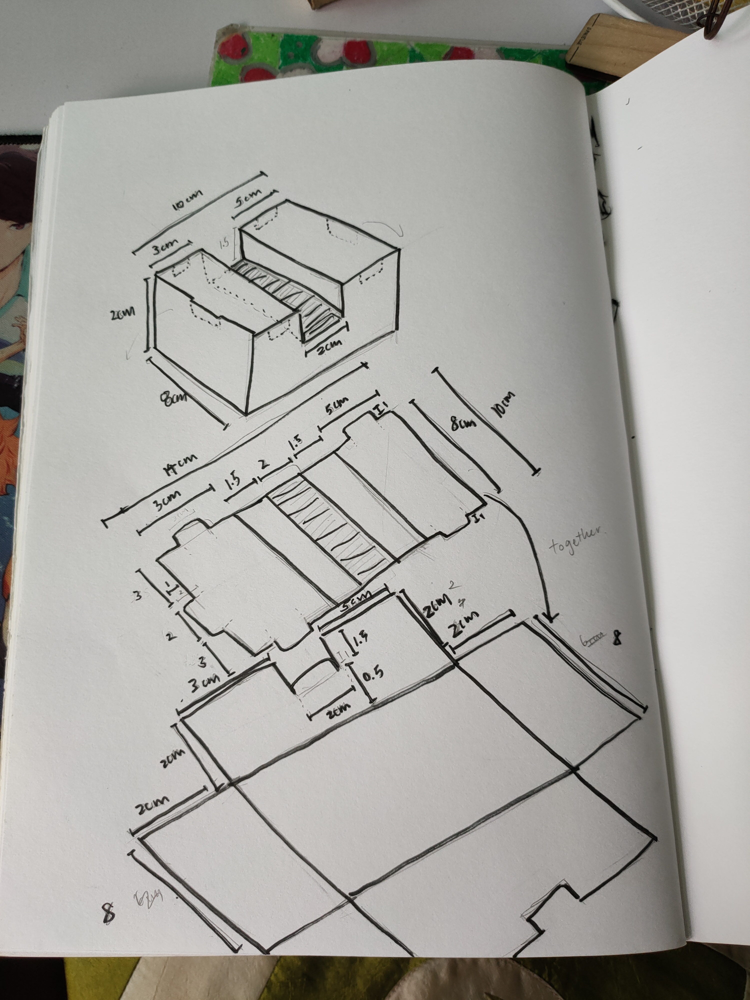
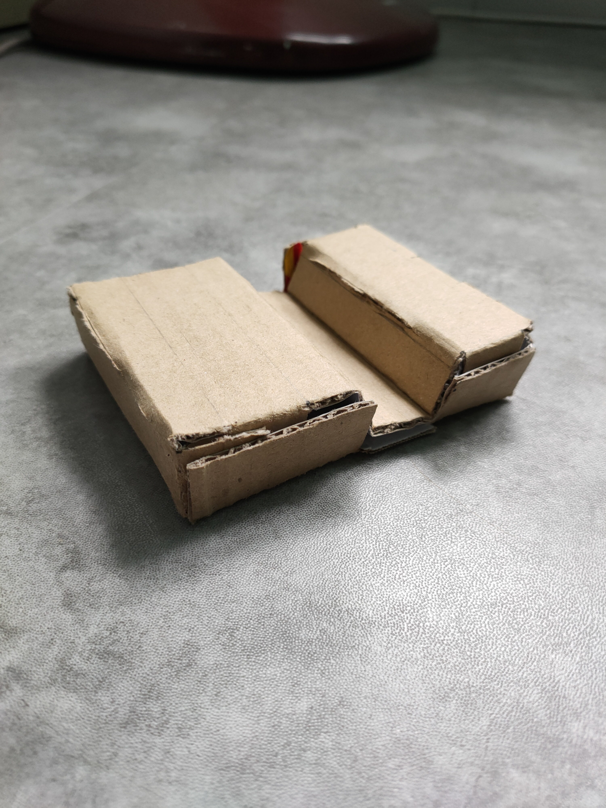
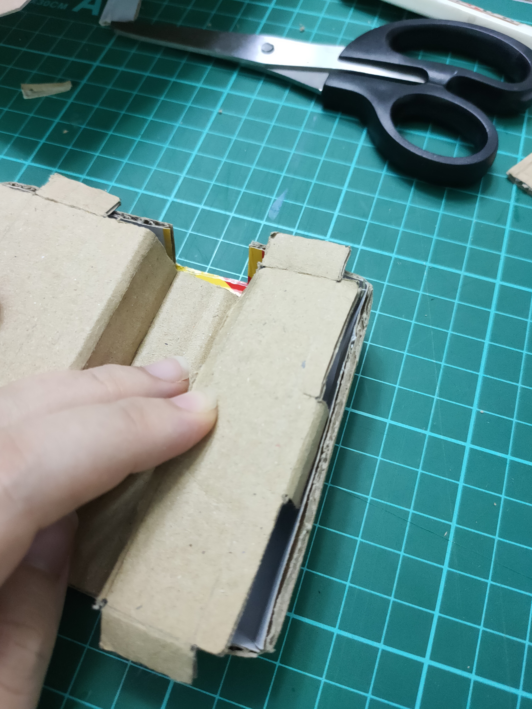

Version Control
After making the website, we were tasked to document how to retract/extract lost data using git.
Process
| 
|
I sketched out the dimensions in 3D roughly on paper and outlined it with a black marker for better visibility. My intention was to make a whole piece with folds so that it could become a box.
I drew out all the parts onto the cardboard in one long continuous strip as shown in the picture below:
I use stripes to indicate which areas I need to cut out and remove.
After cutting them out using a penknife, scissors and a ruler, I scored lines where I needed the cardboard to fold as well as for the flaps.
Fold into a box and make a valley on the parts where your phone should rest on.
|
Hero Shots

Pros
It can withstand the weight of the phone while it rests on its length
small, can fit into bag
can stored small trinkets inside, even tissue if possible
Cons

Not as tight fitting as I would liked (some gaps)
Did not manage to achieve my goal of it being foldable as I realized in order for the flaps to fit securely, the base needs to be glued together.
Can’t hold the weight of the phone when its placed vertically